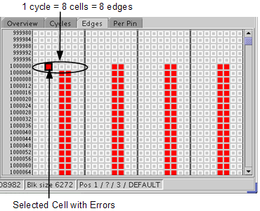

Edges tab
The Edges tab gives you a pass/fail result for each of the 8 available edges. Edges that are not used in the waveform count as passed. These results are recorded in the detailed error map.
One cycle per row and each column is displayed.

Note To show the edge results in this view, you need to choose the
P/F(1 bit) and the Edge Mode in the Result Mode tab and choose EDGE Granularity Required in the Execution Mode tab
of Result Configuration.
Functional changes
- Introduced before SmarTest 6.3.2